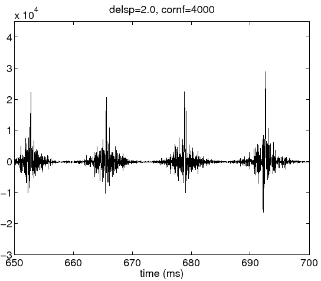
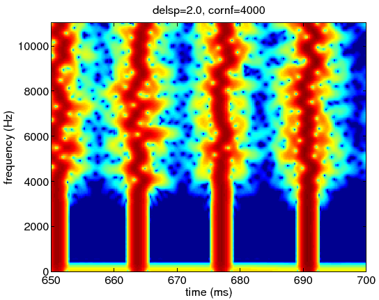

Next: groupDelayStandardDeviation=6 ms
Up: Parameter: groupDelayStandardDeviation (*)
Previous: groupDelayStandardDeviation=0.5 ms (default )
Figure 8:
Waveform of the excitation source signal with 2 ms group delay dispersion.
|  |
Figure 9:
Spectrogram of the excitation source signal with 2 ms group delay dispersion.
|  |
Next: groupDelayStandardDeviation=6 ms
Up: Parameter: groupDelayStandardDeviation (*)
Previous: groupDelayStandardDeviation=0.5 ms (default )
Hideki Kawahara
2007-05-05